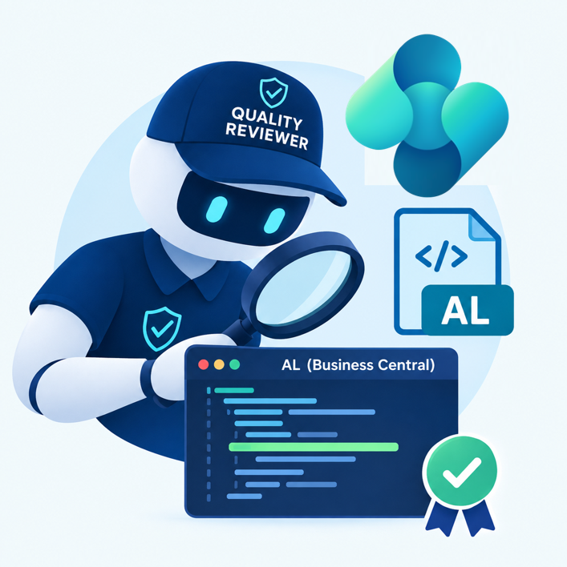
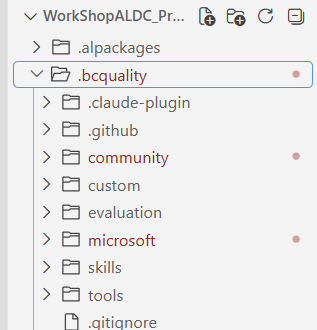
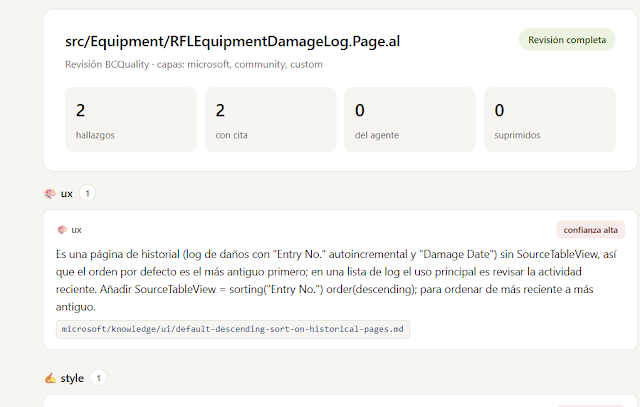

BC Quality: Auditing Your Business Central Code (Human-Written or Agent-Written)
Whenever I talk about building Business Central extensions with agents, one criticism comes up again and again: we're losing control over what gets generated. And it's a fair point. An agent can write code that compiles and runs perfectly fine while still carrying hidden issues — a missing ToolTip, a performance anti-pattern, an event handled the wrong way. Nothing that breaks the build, but exactly the kind of thing a good code reviewer would catch immediately.

Microsoft recently released a tool built specifically for this problem: BC Quality, a knowledge repository of best practices that lets you objectively validate how well-built your AL code actually is. And here's the important nuance: it isn't limited to reviewing agent-generated code. It works exactly the same way for code you write yourself. Fifth entry in the series.
What BC Quality is — and isn't
BC Quality doesn't execute anything. It's not a linter, it doesn't compile, it doesn't run real-time analysis. It's a knowledge base made of Markdown files documenting the best practices and patterns any Business Central development should follow. The core idea is simple but powerful: the same bar applies to everyone. The rules that apply to a human developer apply identically to an agent. No exceptions.
It's equally important to understand what falls outside its scope. BC Quality isn't meant to catch things a model already knows to flag on its own — an HTTP URL that should be HTTPS, or a hard-coded secret sitting in plain text, are things any reasonably capable model already detects without an external knowledge base. BC Quality focuses on what a model, by default, doesn't know it should be checking: Business Central–specific conventions around performance, security, error handling, events, and telemetry.
Three layers of rules
The system is organized into three layers, applied in order of precedence:
- Microsoft: the official layer, reviewed and maintained by the Business Central product team.
- Community: rules proposed by the community. If Microsoft decides a community rule is solid enough, it can be promoted to the official layer.
- Custom: your own layer, empty by default, where each partner or company adds its internal rules on top of Microsoft's and the community's.
All three layers are active at the same time. Where rules conflict, precedence resolves the order.
Since it's open source, anyone can propose new rules — as long as they add something a model wouldn't catch on its own, not just a restatement of the obvious.
Setting up BC Quality in a project
The workflow has three clear steps: bring in the repository, build a knowledge index, and create a reviewer agent that uses it.
1. Fork the repository
The first step is bringing BC Quality into your own project as a git submodule. A single PowerShell command creates the submodule inside a .bcquality folder and pulls in everything: Microsoft's rules, the community's rules, and an empty custom folder waiting for your own standards.

2. Build the knowledge index
With dozens of knowledge files available, re-reading all of them on every run would burn through tokens for no reason. The fix is generating an index first (Build-KnowledgeIndex.ps1) that summarizes where each piece of knowledge lives. The reviewer agent checks that index first and only fetches the full document when it actually needs it.
This index needs to be generated the first time and regenerated whenever new knowledge files show up — whether Microsoft publishes new rules, the community contributes its own, or you fill in your custom layer. As a general rule of thumb, each knowledge file should stay under 100 lines, ideally around 50, so it stays easy to consult and maintain.
3. Create the reviewer agent
With the repository and the index in place, the next step is building an agent whose only source of truth is BC Quality. This agent needs to:
- Locate the BC Quality repository and confirm the index exists, regenerating it if needed.
- Support both single-file mode and batch mode (reviewing an entire folder, such as
src). - Warn when the number of files to review is high — more than 15, in my setup — to avoid losing context along the way, and allow reviewing in smaller batches instead.
- Invoke the repository's entry point, which routes to the relevant read/execute skills depending on what's needed, always respecting layer precedence.
- Clearly distinguish findings backed by the knowledge base from the model's own judgment — never fabricating a path or attributing something to BC Quality that isn't actually there.
The output of each review is a JSON file per analyzed file, including the review date, the source of each finding, and the full detail — no shortened summaries.
From JSON to a readable report
A JSON file per source file is fine for processing but awkward to read at a glance. That's why the workflow finishes by generating a small JavaScript script that walks through the generated JSON files along with the knowledge index and produces a readable HTML report: for every reviewed file, what was found, which domain it belongs to (UI, performance, style...), and — most importantly — exactly which part of BC Quality each finding comes from.
That last point is where most of the practical value sits: when the report flags an issue, it points to the exact knowledge rule behind it. If a finding doesn't carry that reference, it's flagged as coming from the model's own judgment — never presented as if it came from BC Quality when it didn't.

The practical takeaway
Running this workflow against a full src folder produces a report that clearly separates three layers of value: what Microsoft contributes, what the community contributes, and what your own accumulated experience contributes through the custom layer. Not every file will have findings — some come back clean — and in other cases the agent may flag something relevant that isn't yet captured as a formal BC Quality rule, which is itself useful signal for deciding whether it's worth turning into a new community rule.
My recommendation is to make this review a routine step, not a one-off — for code your agents generate and for code you write yourself. The goal isn't to replace the developer's judgment, but to augment it with a consistent, objective verification layer for the whole team.
If you work on AL development, with or without agents, this is a tool worth adding to your workflow sooner rather than later.
Stay tuned for the next entry in the series, where we continue exploring agents, skills, and prompts applied to Business Central.